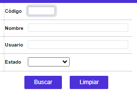
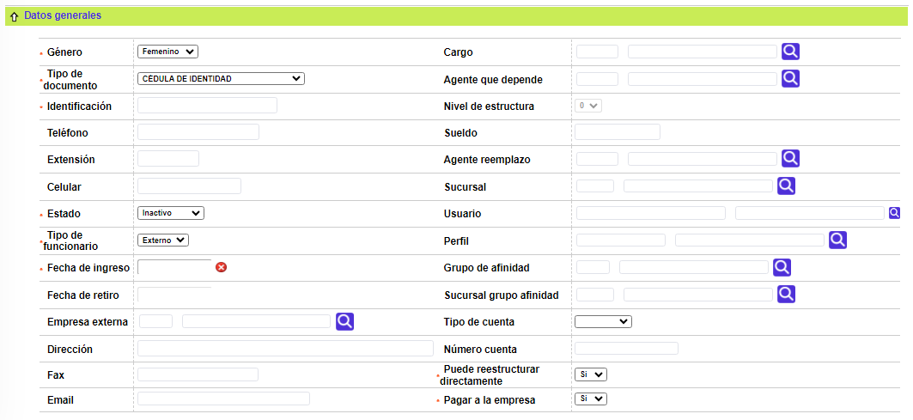

Funcionarios
Mediante esta función se habilita la consulta y mantenimiento de la tabla en la cual la entidad financiera almacena los principales datos básicos de todos sus colaboradores, sean o no empleados directos o personal de apoyo que estén relacionados con el giro del negocio de tarjetas de crédito. La posibilidad de asociar agentes externos de varias empresas está condicionada a que la entidad disponga del módulo Agentes y promotores puesto que allí reside la tabla correspondiente de Empresas externas.

El formulario contiene los enlaces: Actualizar, Eliminar, Adicionar y Detalle. Adicionalmente, cuenta con un filtro de búsqueda.
Filtro: Se pueden realizar consultas a través de las siguientes opciones:

Código |
Campo numérico de cinco posiciones, obligatorio, en el cual se registra el código que identifica a cada funcionario. |
Nombre |
En este campo alfanumérico de 30 posiciones, obligatorio, se registra el nombre del funcionario asociado a cada código. |
Adicionar: Si el usuario invoca la opción Adicionar se despliega un formulario con los siguientes bloques:

Código |
Campo numérico de cinco posiciones, obligatorio, en el cual se registra el código que identifica a cada funcionario. |
Nombre |
En este campo alfanumérico de 30 posiciones, obligatorio, se registra el nombre del funcionario asociado a cada código. |

Género |
Campo que posee lista de valores adjunta de la que se debe seleccionar entre Femenino o Masculino según corresponda, puesto que con base en este dato el sistema realiza una validación del número del documento de identificación del funcionario. Este campo es obligatorio únicamente cuando el tipo de persona es natural. |
Cargo |
Campo no obligatorio, que posee lista de valores, de la que se debe seleccionar el cargo desempeñado por el funcionario. |
Tipo de documento |
Este campo cuenta con lista de valores de la que se selecciona el tipo de documento de identificación del funcionario, desplegándose la abreviatura del mismo. |
Agente que depende |
Este campo no obligatorio, contiene lista de valores poblada a partir de esta misma tabla, de la cual se puede seleccionar el superior del cual depende el funcionario, acorde con las relaciones jerárquicas ascendentes que pueden darse entre los mismos. Al ingresar el código de agente depende se debe tener en cuenta que dicho agente debe tener un nivel de estructura estrictamente menor al agente de quien va depender. |
Identificación |
Campo numérico de 16 posiciones, obligatorio, dentro del cual se registra el número del documento que identifica al funcionario. |
Nivel de estructura |
Campo que posee lista de valores adjunta que permite asociar a cada funcionario un valor numérico de cero a cinco, para facilitar el control de la jerarquía (responsabilidad) entre ellos. Sólo se habilita cuando exista una relación de dependencia y se haya diligenciado el campo anterior. |
Teléfono |
Este campo alfanumérico de 15 posiciones, no obligatorio, permite registrar los números telefónicos en que puede ser contactado el funcionario. |
Sueldo |
En este campo numérico de hasta 10 dígitos, no obligatorio y de carácter simplemente informativo, se puede ingresar el valor del sueldo básico mensual percibido por el funcionario. |
Extensión |
Campo alfanumérico de 5 posiciones, no obligatorio, en el cual se registra, si existe, el número de la extensión en que puede ubicarse al funcionario. |
Agente reemplazo |
Campo no obligatorio, que posee lista de valores, poblada a partir de esta misma tabla, invocando los nombres de los demás funcionarios, permite establecer relaciones jerárquicas descendentes entre los mismos, el sistema asigna el código correspondiente, desplegando el nombre a éste asociado. |
Celular |
Este campo alfanumérico de 15 posiciones, no obligatorio, permite registrar el número del teléfono celular del funcionario, en caso que lo hubiere. Esta información cobra especial importancia en el caso de los funcionarios internos que atienden fraudes y deben ser informados oportunamente de los posibles fraudes detectados por los procesos de alertas. |
Sucursal |
Este campo que cuenta con lista de valores, poblada en la opción Estructura orgánica dentro del grupo de Tablas de la entidad financiera, permite seleccionar la sucursal o dependencia a la que está asociado un funcionario, o bien, se puede digitar el código de la misma. |
Estado |
Campo que posee lista de valores adjunta de la que se debe seleccionar si el funcionario está Activo, Inactivo, Retirado o Suspendido. |
Usuario |
Campo no obligatorio, que posee lista de valores de la que se puede seleccionar el usuario asignado al funcionario, y que le permite acceder o ingresar a la base de datos. |
Tipo de funcionario |
Este campo cuenta con lista de valores adjunta de la que se debe seleccionar entre Interno o Externo la condición del vínculo del funcionario con la entidad financiera. |
Perfil |
Este campo obligatorio, posee lista de valores con los Perfiles de promotor de la que se selecciona el perfil al que pertenece el agente. |
Fecha de ingreso |
Campo en formato YYYY-MM-DD, obligatorio, en el cual se registra la fecha de ingreso del funcionario. |
Grupo de afinidad |
Este campo que cuenta con lista de valores, poblada en la opción Estructura orgánica dentro del grupo de Tablas de la entidad financiera, permite seleccionar la sucursal o dependencia a la que está asociado un grupo de afinidad. |
Fecha de retiro |
En este campo en formato YYYY-MM-DD, no obligatorio, se registra la fecha de retiro del funcionario. |
Sucursal grupo de afinidad |
En este campo alfanumérico de 80 posiciones, obligatorio, se registra el nombre asociado al código de cada categoría. |
Empresa externa |
Campo no obligatorio, posee lista de valores de la que se selecciona la organización a la que pertenece el agente. |
Tipo de cuenta |
Si las comisiones que devengue el funcionario le deben ser abonadas en una cuenta Corriente Rotativo o de Ahorro, en este campo se selecciona el tipo o clase de cuenta a afectar. |
Dirección |
En este campo alfanumérico de 40 dígitos, no obligatorio, se ingresan los datos de la ubicación (nomenclatura) de la sede principal de la empresa para la que labora el agente externo. |
Número cuenta |
Una vez seleccionado el tipo de cuenta debe registrarse en este campo el número de la cuenta a afectar. |
Fax |
Campo alfanumérico de 20 posiciones, no obligatorio, dentro del que se digita el número(s) del fax de la empresa externa. |
Puede reestructurar directamente |
Campo no obligatorio, permite determinar o señalar para cada funcionario si posee o no el atributo de realizar o gestionar reestructuración de obligaciones sin que las mismas cumplan con los parámetros establecidos para ese evento. |
Este campo alfanumérico de 30 posiciones, no obligatorio, permite registrar la dirección electrónica del funcionario, bien sea Interno o Externo a la entidad, información que es supremamente útil y necesaria en casos como el de los funcionarios que atienden fraudes y deben ser informados oportunamente de los posibles fraudes detectados por los procesos de alertas. |
|
Pagar a la empresa |
En este campo no obligatorio, que se activa únicamente para los agentes externos, se indica de manera individual si las comisiones y demás valores devengados por éstos deben ser cancelados directamente a la empresa para la que laboran o en su defecto a ellos mismos. |
Actualizar: Al activar ese enlace se despliega un formulario en el cual los únicos campos modificables son: Nombre, Género, Cargo, Tipo de documento, Agente que depende, Identificación, Nivel de estructura, Teléfono, Sueldo, Extensión, Agente reemplazo, Celular, Sucursal, estado, Usuario, Tipo de funcionario, Perfil, Fecha de ingreso, Grupo de afinidad, Fecha de retiro, Sucursal grupo de afinidad, Empresa externa, Tipo de cuenta, Dirección, Número de cuenta, Fax, Puede reestructurar directamente, E-mail, y Pagar a la empresa.

Detalle: Si el usuario invoca la opción Detalle se despliega el siguiente formulario: